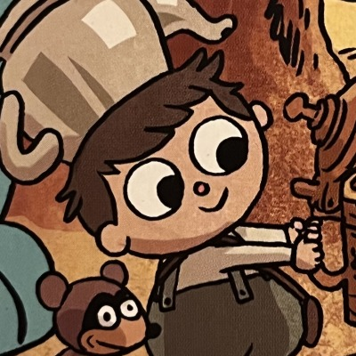
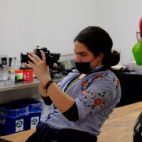

My Portfolio!
My Name is Briany Reyes, and I Am A Story Artist

Hello There!
My name is Briany Reyes and I live in New York. I'm a student at BMCC and the Ghetto Film School. I grew up all around the Bronx. I got into visual storytelling as a kid from the people around me. All of my siblings were into drawing in some kind of way. My dad had a video camera from the late 90's that we would watch tapes on, and took photos all the time. I also got to watch a lot of movies and shows growing up, taking in as much as I could. After that, I watched as much as I could. Videos about being a better artist, analysis of my favorite everything's (movies, shows, characters, arcs), and behind the scenes. In middle school I would watch these videos, and join some of my schools after school programs: Film club, Cartooning, and Art club. In high school, I was a steady member, and it's Assistant Stage Manager for my last two years, of the drama clubs set crew. Being there, I got the privilege to learn under Chris Higgins and use Lehman Stages equipment. And it was the summer before my senior year that I was accepted into the Ghetto Film School and got extensive learning and training in their 30 month Fellowship program. While being there, I made my own non-dialogue film and be the DP for Shelly Vasquez's "CTRL". I'm about halfway through the program, and will continue creating films and making memories.

Contact
My number is 718-498-1043. Thats pauls boutique and they're in brooklyn